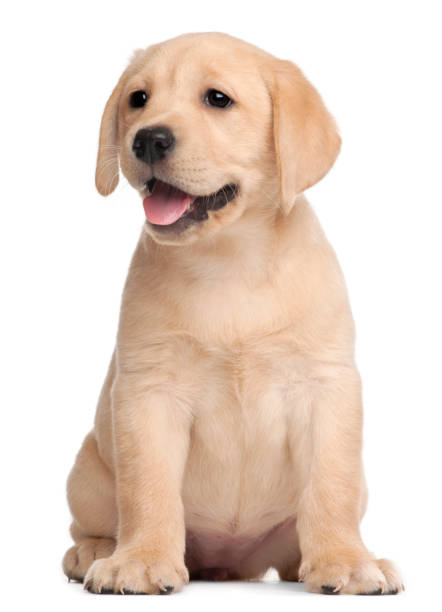

The German Shepherd Dog is a large, agile, muscular dog of noble character and high intelligence.
The Golden Retriever is a sturdy, muscular dog of medium size, famous for the dense, lustrous coat of gold that gives the breed its name.
A labradoodle is a crossbreed dog created by crossing a Labrador Retriever and a Standard or Miniature Poodle.

The medium-sized Labrador Retriever is an extremely popular family dog, though it likes to be mentally and physically stimulated too as an original working dog.